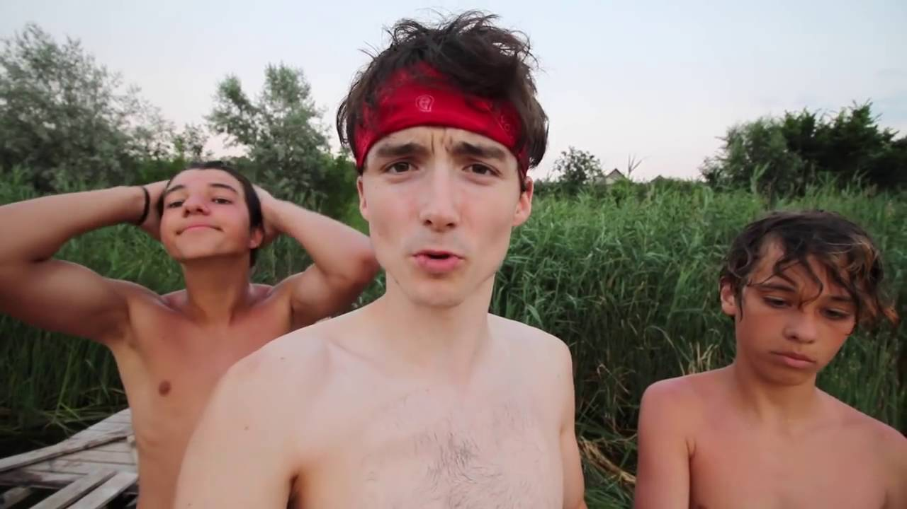

Cursurile de apă, la control! - Gazeta de Nord Vest
 Acasa ȘTIRI All Cultura Editorial Externe Life Locale Nationale SportProgramul de dezvoltare a județului Satu Mare în viziunea candidatului ALDE
Un nou tur de forță al candidatului PSD la președinția
Adrian Ștef, un codrean printre codreni
Cosmin Rațiu vrea să le ofere tinerilor sătmăreni o șansă
Anchete & ReportajeCercetășia la Liceul Mihail Eminescu din Satu Mare
Peştera cu Cristale Farcu din Bihor, unicat în Europa
Tăşnadul interbelic – un orăşel cochet, cu o economie în plină
80 de ani de la Dictatul de la Viena –
Lacul de Smarald de la Tarna Mare – minunăţia naturală de
Bursa zvonurilorCu jointu’ în plină zi
O parcare de epocă
Cu capra-n portbagaj
Parcare hibrid
Slujbașii bisericii în campanie cu Petric!
Economic Mica Publicitate Home ȘTIRI LocaleCursurile de apă, la control!
Share Facebook Twitter Pinterest WhatsApp
Reprezentanții Administrației Bazinale de Apă (ABA) Someș-Tisa au verificat modul în care au fost salubrizate cursurile de apă și au fost întreținute șanțurile și rigolele în localități, pentru asigurarea secțiunilor de scurgere a apelor. Controalele au fost efectuate în luna august 2020, în județele Cluj, Maramureș, Satu Mare, Bistrița-Năsăud și Sălaj.
Comisiile au verificat 191 de unități administrativ-teritoriale (U.A.T.-uri) din cele cinci județe arondate (36 în județul Cluj, 73 în județul Maramureș, 11 în județul Satu Mare, 28 în județul Bistrița-Năsăud și 43 în județul Sălaj).
Au fost încheiate Procese-verbale de constatare la toate U.A.T.-urile verificate, iar acolo unde s-au constatat neconformități s-a dispus reprezentanților legali remedierea acestora, respectiv îndepărtarea depozitelor de deșeuri.
”Reiterăm faptul că primăriile au obligaţia, ca pe raza localităților, să asigure măsuri corespunzătoare pentru conservarea şi protecţia mediului, întreţinerea cursurilor de apă şi prevenirea poluării accidentale a mediului şi implicit, a cursurilor de apă.
Totodată, deşeurile depozitate în zona podurilor și a podețelor de către agenţii economici sau de către cetăţeni pot provoca inundații, prin obturarea secțiunii de scurgere a apei.
Revenim la apelul adresat cetățenilor de a manifesta atenție mediului în care trăim. Păstrarea mediului curat și protejarea resurselor de apă stă în puterea și în responsabilitatea fiecăruia dintre noi: oameni, autorități și organizații”, se arată într-o informare făcută de Administrația Bazinală de Apă (ABA) Someș-Tisa.
14 September 2020 14 September 2020
POLITIC
ȘTIRIVIDEO. LIDERUL PSD SATU MARE: „80.000 de pensionari sătmăreni primesc pensii tăiate cu 26%” de Guvernul Iohannis-Orban”
Gazeta Nord Vest - 16 September 2020 0 Președintele Executiv interimar al PSD SATU MARE a anunțat astăzi, în cadrul unei conferințe de presă, că este trist pentru cei 80.000 de pensionari... Read more PoliticDOREL COICA: ”Fiecare zonă este importantă pentru noi, și dialogul este esențial”
Gazeta Nord Vest - 15 September 2020 0 Candidatul PSD la Primăria municipiului Satu Mare, Dorel Coica, a declarat că pentru el și pentru echipa sa, fiecare zonă a orașului este importantă. ”Așa... Read more ȘTIRIADRIAN ȘTEF: ”Producătorii sătmăreni au nevoi de centre pentru predarea produselor”
Gazeta Nord Vest - 15 September 2020 0 Candidatul ALDE la președinția Consiliului Județean, Adrian Ștef, a declarat că una dintre prioritățile lui pentru viitorul mandat este înființarea de centre de preluare... Read more ȘTIRIADRIAN ALBU: ”Un primar bun trebuie să aibă în primul rând o viziune și în al doilea rând o echipă de profesioniști”
Gazeta Nord Vest - 15 September 2020 0 Candidatul PNL la Primăria municipiului Satu Mare, Adrian Albu, este de părere că Sătmarul trebuie să aibă un primar cu viziune și să aibă... Read moreArticole relevante
LocaleProgramul de dezvoltare a județului Satu Mare în viziunea candidatului ALDE pentru președinția Consiliului Județean, Adrian Ștef
Otto Pop - 18 September 2020 0 Cel mai complet program cu care se prezintă un candidat în fața alegătorilor în această campanie electorală este, de departe, cel al candidatului ALDE... Read more Top NewsUn nou tur de forță al candidatului PSD la președinția Consiliului Județean
Gazeta Nord Vest - 17 September 2020 0 Radu Roca, candidatul PSD la președinția Consiliului Județean Satu Mare, împreună cu candidații PSD la Consiliul Județean Nicolae Avorniciți, Filip Cătălin, Mirela Suciu și... Read more LocaleAdrian Ștef, un codrean printre codreni
Gazeta Nord Vest - 17 September 2020 0 Candidatul ALDE la președinția Consiliului Județean Satu Mare, Adrian Ștef, s-a aflat ieri în mijlocul codrenilor din comuna Homoroade. Cu o zi înainte, Adrian Ștef... Read more LocaleCosmin Rațiu vrea să le ofere tinerilor sătmăreni o șansă să se întoarcă acasă
Gazeta Nord Vest - 17 September 2020 0 Tinerii sătmăreni pleacă să studieze în marile centre universitare din țară, însă oricât ar fi ei de atașați de orașul lor natal, acesta nu... Read more LocaleAurelia Fedorca se îndreaptă cu încredere spre un nou mandat
Gazeta Nord Vest - 17 September 2020 0 Echipa PSD Negrești-Oaș este primită cu deschidere, apreciere și bucurie de negreșteni. Aurelia Fedorca reușește să țină echipa unită pentru a... Read moreLatest Posts
LocaleProgramul de dezvoltare a județului Satu Mare în viziunea candidatului ALDE pentru președinția Consiliului Județean, Adrian Ștef
Otto Pop - 18 September 2020 0 Cel mai complet program cu care se prezintă un candidat în fața alegătorilor în această campanie electorală este, de departe, cel al candidatului ALDE... Read more UncategorizedDorel Coica, prezent printre sătmăreni
Gazeta Nord Vest - 17 September 2020 0 Ieri, joi, 17.09.2020, echipa PSD a municipiului Satu Mare a fost la pas în cartierul Carpați II împreună cu candidatul la Primăria... Read more Top NewsUn nou tur de forță al candidatului PSD la președinția Consiliului Județean
Gazeta Nord Vest - 17 September 2020 0 Radu Roca, candidatul PSD la președinția Consiliului Județean Satu Mare, împreună cu candidații PSD la Consiliul Județean Nicolae Avorniciți, Filip Cătălin, Mirela Suciu și... Read more LocaleAdrian Ștef, un codrean printre codreni
Gazeta Nord Vest - 17 September 2020 0 Candidatul ALDE la președinția Consiliului Județean Satu Mare, Adrian Ștef, s-a aflat ieri în mijlocul codrenilor din comuna Homoroade. Cu o zi înainte, Adrian Ștef... Read moreULTIMELE ȘTIRI
LocaleProgramul de dezvoltare a județului Satu Mare în viziunea candidatului ALDE pentru președinția Consiliului Județean, Adrian Ștef
Otto Pop - 18 September 2020 0 Cel mai complet program cu care se prezintă un candidat în fața alegătorilor în această campanie electorală este, de departe, cel al candidatului ALDE... Read more Top NewsUn nou tur de forță al candidatului PSD la președinția Consiliului Județean
Gazeta Nord Vest - 17 September 2020 0 Radu Roca, candidatul PSD la președinția Consiliului Județean Satu Mare, împreună cu candidații PSD la Consiliul Județean Nicolae Avorniciți, Filip Cătălin, Mirela Suciu și... Read more LocaleAdrian Ștef, un codrean printre codreni
Gazeta Nord Vest - 17 September 2020 0 Candidatul ALDE la președinția Consiliului Județean Satu Mare, Adrian Ștef, s-a aflat ieri în mijlocul codrenilor din comuna Homoroade. Cu o zi înainte, Adrian Ștef... Read more LocaleCosmin Rațiu vrea să le ofere tinerilor sătmăreni o șansă să se întoarcă acasă
Gazeta Nord Vest - 17 September 2020 0 Tinerii sătmăreni pleacă să studieze în marile centre universitare din țară, însă oricât ar fi ei de atașați de orașul lor natal, acesta nu... Read more LocaleAurelia Fedorca se îndreaptă cu încredere spre un nou mandat
Gazeta Nord Vest - 17 September 2020 0 Echipa PSD Negrești-Oaș este primită cu deschidere, apreciere și bucurie de negreșteni. Aurelia Fedorca reușește să țină echipa unită pentru a... Read moreredactie@gazetanord-vest.ro
0361-407-733
Copyright 2013-2019
S.C. Nord Vest TV Advertising S.R.L.
Departament Publicitate
gazeta_nv@yahoo.com
0742-964-968
Str. Petofi Sandor, nr.4 A
Satu Mare, Romania
Nord Vest TV - LIve
Acest site web folosește cookie-uri pentru a vă îmbunătăți experiența. Vom presupune că sunteți de acord cu asta, dar puteți renunța dacă doriți. Setari cookie ACCEPT Privacy & Cookies Policy ClosePrivacy Overview
This website uses cookies to improve your experience while you navigate through the website. Out of these cookies, the cookies that are categorized as necessary are stored on your browser as they are essential for the working of basic functionalities of the website. We also use third-party cookies that help us analyze and understand how you use this website. These cookies will be stored in your browser only with your consent. You also have the option to opt-out of these cookies. But opting out of some of these cookies may have an effect on your browsing experience. Necessary Necessary Always EnabledNecessary cookies are absolutely essential for the website to function properly. This category only includes cookies that ensures basic functionalities and security features of the website. These cookies do not store any personal information.
Non-necessary Non-necessaryAny cookies that may not be particularly necessary for the website to function and is used specifically to collect user personal data via analytics, ads, other embedded contents are termed as non-necessary cookies. It is mandatory to procure user consent prior to running these cookies on your website.